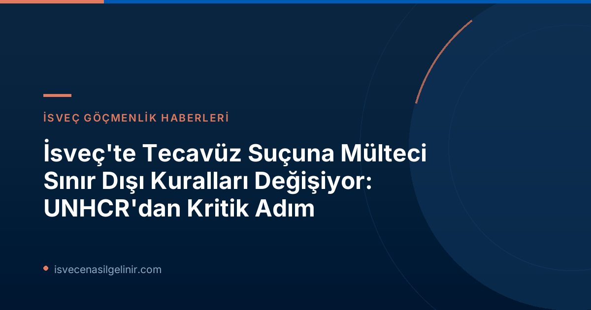

Meya Åberg Davası: Kararın Perde Arkası
Eylül 2024'te Skellefteå şehrinde yaşanan talihsiz olayda, o dönem 16 yaşında olan Meya Åberg, bir yaya tünelinde cinsel saldırıya uğradı. Saldırganın İsveç vatandaşı olmaması nedeniyle savcılık, zanlının hapis cezasının yanı sıra sınır dışı edilmesini de talep etti. Ancak mahkeme, zanlıyı üç yıl hapse mahkum etmesine rağmen, tecavüzün "son derece ciddi bir suç" olmadığı yorumunu yaparak sınır dışı kararı vermedi. Bu karar, İsveç'te geniş çaplı bir tartışma başlattı ve uluslararası alanda büyük tepki topladı.
"Bu olay beni çok etkiledi. İki yıl geçmiş olmasına rağmen hala şehirde dışarı çıkmakta zorlanıyorum," diyen Meya Åberg, yaşadığı travmayı dile getirdi. Kamuoyunun yanı sıra Meya'nın cesaretle yaşadıklarını anlatması da davanın gündemde kalmasında etkili oldu. Birçok kişi Meya'ya destek verirken, ne yazık ki olumsuz yorumlar da yapıldı.
İsveç Mevzuatı ve BM Mülteci Konvansiyonu Çatışması
İsveç yasalarına göre, İsveç vatandaşı olmayan bir suçlu, altı aydan uzun süre hapis cezasına çarptırılırsa sınır dışı edilebilir. Ancak bu davada, saldırganın İsveç'e mülteci olarak gelmesi nedeniyle mahkeme, Birleşmiş Milletler (BM) Mülteci Konvansiyonu'nu da göz önünde bulundurmak zorunda kaldı. Konvansiyonda, mülteci statüsündeki bir kişinin sınır dışı edilebilmesi için işlediği suçun "son derece ciddi" olması gerektiği belirtiliyor. Mahkeme, tecavüzü bu kapsamda değerlendirmediği için zanlı hakkında sınır dışı kararı veremedi.
Önemli Bilgi: Yasal Çerçeve
| Kural/Limit | İsveç Yasaları | BM Mülteci Konvansiyonu (Eski) |
|---|---|---|
| Sınır Dışı Şartı (Vatandaş Olmayanlar İçin) | 6 aydan uzun hapis cezası | Suçun "son derece ciddi" olması |
| Tecavüzün Değerlendirilmesi (Eski Kılavuz) | Sınır dışı potansiyeli mevcut | "Son derece ciddi" olarak değerlendirilmiyordu |
Bu karar, İsveç'in iç hukuku ile uluslararası mülteci hukuku arasındaki bir gerilimi gözler önüne serdi ve İsveç'in göç politikaları açısından önemli bir dönüm noktası oldu. İsveç’te güncel göçmenlik ve vatandaşlık süreçleri hakkında detaylı bilgi için sverigemedborgarskapsprov.com adresini ziyaret edebilirsiniz.
İsveç Göç Bakanı Johan Forssell'in Girişimleri ve UNHCR Değişikliği
Zanlının sınır dışı edilmemesi kararı, İsveç Göç Bakanı Johan Forssell'in (M) sert tepkisine neden oldu. Forssell, bahar aylarında UNHCR'ın kılavuzlarını değiştirmesi için yoğun diplomatik baskı yaptı. Bakan Forssell, "Eğer bir kişi İsveç'e gelip tecavüz gibi ciddi bir şiddet suçu işlerse, İsveç'in bir parçası olma hakkını kendi isteğiyle reddetmiş olur. Bu tür sınır dışı işlemlerini mümkün kılan yasalara ve konvansiyonlara ihtiyacımız var," ifadelerini kullandı.
Kısa süre önce, Forssell'e UNHCR'ın kılavuzlarında değişikliğe gideceği bilgisi verildi. Bu değişiklik sayesinde, artık tecavüz suçundan hüküm giyen kişiler – mülteci statüsünde olsalar bile – sınır dışı edilebilecek. UNHCR'ın güncellenecek kılavuzlarında, tecavüzün "son derece ciddi bir suç" olarak açıkça belirtileceği ifade edildi.
Bakan Forssell, "Birçok üye devlet arasında destek toplamayı ve UNHCR'ın konvansiyonun uygulanışını değiştirmesini sağlamayı başardık. Bunun önemli olduğunu düşünüyorum," diyerek gelişmeleri memnuniyetle karşıladı.
Değişikliğin Anlamı ve Gelecekteki Etkileri
UNHCR'ın bu kılavuz değişikliği, hem İsveç hem de uluslararası alanda mültecilerin işlediği ciddi suçlara karşı uygulanan politikalar açısından bir dönüm noktası niteliğinde. Artık mülteci statüsü, tecavüz gibi ağır suçlarda sınır dışı edilmeye karşı mutlak bir koruma sağlamayacak. Bu durum, ülkelerin kendi güvenlik endişeleri ile uluslararası mülteci hukukunun prensipleri arasında daha dengeli bir yaklaşım bulma çabasının bir göstergesi olarak yorumlanıyor.
Bu yeni yaklaşım, İsveç'in ve benzer durumdaki diğer ülkelerin adalet mekanizmalarını güçlendirecek ve kamu güvenliğini artırma potansiyeli taşıyor. Aynı zamanda, mülteci toplulukları içinde suç işleyen bireylere karşı daha net ve caydırıcı bir mesaj gönderilmesi hedefleniyor.
Referanslar:
- SVT Nyheter Inrikes: https://www.svt.se/nyheter/inrikes/efter-uppmarksammade-domen-for-valdtakt-pa-meya-fn-andrar-sina-riktlinjer
İsveç'te Yaşam ve Vatandaşlık Hakkında Daha Fazla Bilgi Edinin
İsveç'teki yasal süreçler, vatandaşlık başvuruları ve göçmenlik konularında merak ettikleriniz mi var? Uzman rehberimizle tüm sorularınıza yanıt bulun.